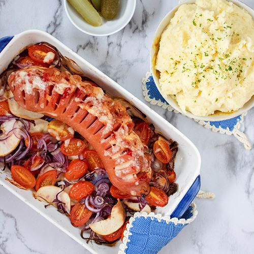

Falukorv i ugn

Beskrivning
Detta är en utsökt och enkel måltid att tillaga och som passar hela familjen.
Falukorv i ugn är en klassiker och tillsammans med potatismos så är det en klassiker hos många familjer.
ingridienser
- Falukorv 800g
- Mjölig potatis
- Gul lök
- Grädde 5dl
- Hushållsost
Steg
- Hacka den gula löken
- Koka potatisen
- Skär skåror i falukorven och lägg i den gula löken i skårorna
- Häll av den färdigkokta potatisen och häll i grädden
- Mosa potatisen med grädden och blanda till önskad konsistens
- Lägg osten på falukorsringen och in i ugnen på 200 grader i 20 minuter
Smaklig måltid!